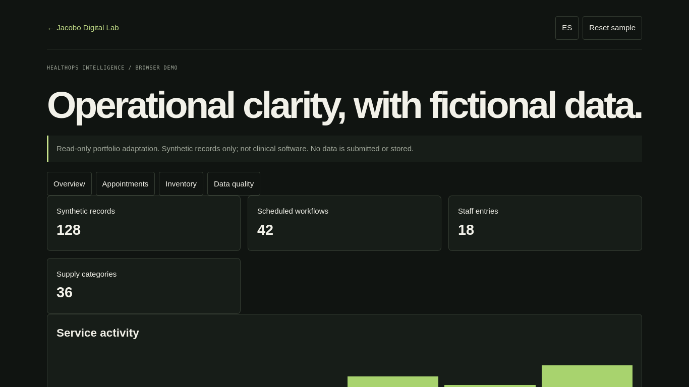

PROJECT CASE STUDY
HealthOps Intelligence
A synthetic, read-only operational snapshot
Explore a small dashboard based on fictional records. Switch between overview, appointments, inventory and data-quality views; filter the indicators and restore the sample state.

Open live demo ↗01 / PROBLEM
Problem: make operational information easier to scan.
02 / OBJECTIVE
Objective: show how metrics and simple workflows can be organized.
03 / SOLUTION
Solution: a browser-only, read-only sample view based on the HealthOps project’s operational scope.
04 / ARCHITECTURE
Architecture: static HTML/CSS/JavaScript, deterministic local fixtures and in-browser filtering; no API or persistent store.
05 / IMPLEMENTATION
Implementation: dashboard KPIs, operational modules, searchable sample appointment list and category filter.
06 / TESTING
Testing: smoke and interaction checks are recorded in the QA report.
07 / LIMITATIONS & ROADMAP
Limitations & roadmap: this adaptation is not the full Python/SQLite application, is not clinical software, uses fictional data and does not change records.
08 / ACCESS
Access: demo, original repository, and technical notes.